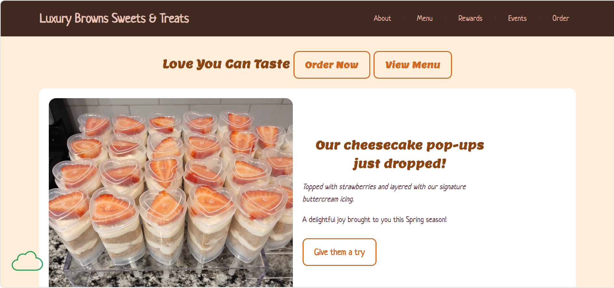

Peer Review 2: Green, Alana

Evaluation (Checklist + Feedback)
Submission:
The website link works correctly and loads without issues.
File Naming:
File structure is organized and easy to follow.
Design - Readability:
The page is clean, simple, and easy to read with clear sections and headings.
Design - Colors & Fonts:
The design is minimal and readable, but could benefit from stronger contrast for better emphasis.
CRAP Principles:
- Contrast: Could be improved for better visibility.
- Repetition: Consistent styling is used throughout the site.
- Alignment: Layout is well aligned and structured.
- Proximity: Good spacing between elements.
Page Structure:
The page is well structured with clear separation of sections.
Header:
The header clearly identifies the page and purpose.
Main Content:
The content is organized and easy to follow.
Navigation:
Navigation works properly and is easy to use.
Footer:
The footer works, but should include contact information and location details.
Additional Feedback (Positive):
The overall design is very clean and visually pleasing. I really like the simple layout and how easy it is to navigate. The structure feels organized and consistent, which makes the website user-friendly.
Suggestions:
- Add contact information (email, phone, social links)
- Add shop location or address for professionalism
- Improve contrast in some areas
- Add more interactive elements
The Good, The Bad, The Ugly:
The Good: Clean layout, simple design, and easy navigation.
The Bad: Missing contact details and location information.
The Ugly: No major issues—just small improvements needed.
Overall:
The website is well designed and easy to use. It has a strong layout and good structure. Adding contact information and improving visual contrast would make it more complete and professional.